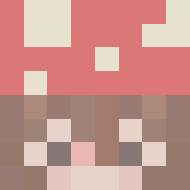

A questing guide for everyone to help you how to complete the quests.
 made by culorfuj
There are 73 daily quests and 35 weekly quests. If the game has no tips, it means the quests are self explanatory.
Daily quests resets every day at 9PM PST / 12 AM EST / 5 AM GMT.
Weekly quests resets every Thursday 9 PM PST / Friday 12 AM EST / Friday 5 AM GMT.
1000 quests per month (about 34 quests per day) is good for starters.
Easy Quests - Quest that can be done within 5-15 minutes
Arcade, BedWars, Duels, Murder Mystery, Paintball, Quakecraft, Speed UHC, and The Pit
Medium Quest - Quests that can be done within 20-30 minutes
Arena Brawl, Blitz Survival Games, Build Battle, Cops and Crims, SkyWars, Smash Heroes, The Walls, TNT Games, Turbo Kart Racers, VampireZ, and Warlords
Hard Quests - Quests that take more than an hour to be done
Mega Walls and UHC
General Questing Tip: AFKing is a common thing to do while questing. You can AFK in Build Battle for the Weekly quest.
Daily Quests: Arcade Gamer
Play 3 Arcade Games
Daily Quest: Arcade Winner
Win a game of Arcade
Weekly Quest: Arcade Specialist
Play 20 Arcade games
Tip: Play Hide and Seek: Party Pooper or Hypixel Says. These games are quick.
Daily Quest: Play Arena
Play 5 games
Daily Quest: Arena Kills
Kill 5 players
Daily Quest: Arena Wins
Win 2 games
Weekly Quest: Play Arena
Play 35 games
Tips:
1. Do 1v1 with a good setup.
Offensive Skill: Falcon Punch
Utility Skill: Petrify or Shadow Step
Support Skill: Cactus Shield, Holy Water, or Life Leech
2. Powerups will help you. Healing spawns around 30 seconds and Damage spawns around 1 minute.
Daily Quests: First Win of the Day
Win a game of Bed Wars
Daily Quest: One More Game!
Play 2 games of BedWars
Weekly Quest: Bed Removal Co.
Break 25 Beds in Bed Wars
Weekly Quest: Sleep Tight.
Win 10 dream games in bed Wars
Weekly Quest: Challenger
Play 10 games with Bed Wars Challenges active
Tip: Play the 4v4 mode with your friends for the quickest way to win. Play whatever mode you feel comfortable playing to break beds for the Weekly Quest.
Bed Wars Dream
Bed Wars Dream modes rotate every Thursday 9 PM PST / Friday 12 AM EST / Friday 5 AM GMT.
Rush Mode: Fast-paced mode for players who want quick games.
Ultimate: Players can choose their ability in this mode.
Ultimate Abilities
Swordsman: Dash forward and damage players, returns to original position by right-clicking with a sword. The cooldown reset by killing a player.
Healer: Heal yourself and teammates within a small radius by right-clicking with a sword.
Gatherer: Duplicate Diamond and Emerald from generators, gains portable Ender Chest, automatically purchases highest-cost team upgrade when team Bed is destroyed.
Demolition: Burns connected wool forward and back, drops TNT when you die, and gains Creeper Egg when destroying a Bed.
Builder: Build bridges and walls out of wool, passively generates wool, and creates wool defense over Bed by right-clicking.
Frozo: Slow enemies within a small radius and earns a Snowball on kill. 16 Snownalls can be held at once.
Kangaroo: Double-jump ability, 50% chance of keeping resources on death, and gains Magic Milk when destroying a Bed.
Castle: 40v40. Both teams have 3 Beds in total (one in Diamond, Heart, and Star Castle). Each team starts off with 3 Alarm Traps and each trap has 5 uses.
Players can earn Streak Points (currency) and they can be used to gain speical powers that lasts several minutes.
Streak Powers
Golden Knight: 30 Streak Points and 5 minutes time limit. You gain a full set of golden armor, a rideable horse, and Swords of Justice. This sword gains you 1 heart per hit on an opponent.
Lone Wolf: 30 Streak Points and 5 minutes time limit. Wolves will follow you as you attack enemies. They will attack anyone that attacks you and the wolves cannot die.
Wither Rider: 60 Streak Points and 3 minutes time limit. You will be on top of the wither and it will shoot fireballs. The streak ends when the wither dies, or the time limit runs out.
Hot Floor: 30 Streak Points and 3 minutes time limit. When you walk, there will be a trail of fire that will damage your enemies. They will take five hearts of damage and will be knocked backwards.
Block Wizard: 60 Streak Points and 3 minutes time limit. Spawns blocks that will attack move towards enemies.
Voidless: No void gamemode.
Beware of your surroundings. You will be attacked by people. Traps can are important, but you cannot void when it is set off.
Lucky Blocks: Lucky Blocks that spawns in generators.
Lucky Blocks spawns
Base Generators: Normal and Promising Lucky Blocks
Diamond Generators: Fortunate and Offensive Lucky Blocks
Emerald Generators: Miracle Lucky Blocks
Daily Quest: Build Battle Player
Play 3 games of Build Battle
Daily Quest: Build Battle Winner
Win a game of Build Battle
Weekly Quest: Master Architect
Play 30 games of Build Battle
Tips:
There are few ways to win Build Battle.
Learn to be a good builder
Build a tower in Solo Mode and AFK
Play Guess the Build
Daily Quest: Game of the Day
Play a game of Blitz
Daily Quest: Win Normal
Win a game of Blitz Normal
Daily Quest: Chest Looter
Loot 25 Chests
Daily Quest: Kills
Kill 5 players in Blitz
Weekly Quest: Blitz Master
Play 15 games of Blitz
Win 5 games of Blitz
Kill 30 players in Blitz
Weekly Quest: Blitz Expert
Loot 100 Chests
Deal 250 Damage to Players
Tips:
1. Map and players in your game are important. Smaller maps generally better.
2. Learn chest routes. Here are some good maps for looting many chests: Alice, City, Greece, and Pixelville.
3. Choose a simple kit like Baker or Paladin.
4. Do not fight players who you cannot beat. Killing nons can give good stuff like Golden Apple or potions.
5. Blitz Star is very good, so try to be at mid to get it. If a player gets it then run. If it is a non, try to kill them before they use it.
6. In Deathmatch, try to clean rather than get cleaned.
7. Try to outsmart players who are better than you at pvp or cheating by using fall damage, Blitz Star, or cleaning.
When to use Blitz Star
1. Gremlin: 1v1 Chasing a good player at edge of map. They will not have any armor/weapon besides what they find in Deathmatch chests or random piles.
2. Assassin: 1v1 against nons.
3. Sweg Move for fast wins. Good for lots of nons who are bad.
4. Few good people you know you cannot beat: Vault for a good weapon or star one of the two to force a 1v1 (Nocturne or Robinhood).
5. Robinhood, Ironman, or Gremlin if you are feeling brave: Cheaters.
6. Invokerer or Pickpocket: If you want to have fun.
7. Acid Rain: Chasing someone on a specific map and feeling cool.
8. If you are playing a tanky kit or have good outer piece: Supplies can be fun since good armor, bow, or sword. Vault is usually safer.
Daily Quest: Win a game! (Defusal)
Win a game of Defusal Cops and Crims
Daily Quest: Kill 15 players! (Defusal)
Get 15 kills in Defusal Mode
Daily Quest: Get 300 points! (Deathmatch)
Get 300 Points in Team Deathmatch
Daily Quest: Win a game! (Deathmatch)
Win a game of Deathmatch
Weekly Quest: 100 kills and 1,500 points
Kill 100 players in Defusal
Get 1,500 points in Deathmatch
Tips:
1. Playing with the CvC Resource Pack can help. It shows where A Site or B Site is.
2. Have good aim.
3. Find a primary and secondary gun that you are good at.
4. You can check to see if your team is winning in Defusal by pressing Quick Join. If your team is winning, stay in the game. If not, try to "quick join" another game.
Daily Quest: Duels Player
Play 5 games of Duels
Daily Quest: Duels Killer
Kill 5 players in Duels
Daily Quest: Duels Winner
Win a game of Duels
Weekly Quest: Duels Weekly Kills
Kill 100 players in Duels
Weekly Quest: Duels Weekly Win
Win 50 games of Duels
No tips
Daily Quest: Game of the Day
Play a game of Mega Walls
Daily Quest: Win
Win a game of Mega Walls with at least 1 kill
Daily Quest: Kills
Kill 15 players
Daily Quest: Faithful
Play 3 games of standard Mega Walls
Win a game of standard Mega Walls
Weekly Quest: Mega Waller
Play 15 games of Mega Walls
Kill 25 players in Mega Walls
Tips:
1. Kill nons and tap logs.
2. Dread is best quester class, but it depends on your playstyle and what class you like playing.
3. Winning in Mega Walls is hard. Just hope for the best and that your team is good unless you are good at the game.
Daily Quest: Winner
Win a game in any mode
Daily Quest: Power Play
Kill the murderer or win as murderer in Classic mode
Daily Quest: Hitman
Kill 2 targets in Assassins mode
Daily Quest: Infector
Kill 10 players in Infection mode
Weekly Quest: Professional
Kill 40 players as murder in any mode
Weekly Quest: Big Winner
Win 15 games in any mode
Tips:
1. Find good camping spots. Take corner shots.
2. Pick up gold.
3. Maps does not matter, but Ancient Tomb is the easiest map to play on.
4. Being the Infector is eaiser to get the Infector quest. There are ways you can infect yourself besides getting killed by an Infector.
Maps you cannot infect yourself
Ancient Tomb, Cruise Ship (Storm event only), Headquarters, Mountain, and Transport
Maps you can infect yourself
Aquarium: Shark Tank or Piranha trap (2 golds)
Archives: End portal
Darkfall: Fire trap (1 gold)
Gold Rush: Blowing yourself up with TNT (2 golds)
Hollywood: Jumping in a vent + Casting event
Hypixel World: Lava pit
Library: Voiding
San Peratico V2: Poisonous water
Skyways Pier: Trap (2 golds)
Snowglobe: Falling in train tracks + Snow/Ice trap (2 golds)
Snowfall: Melting pond trap (1 gold)
Spooky Mansion: Wall closing trap + Basement trap (2 gold)
Subway: Lights falling trap (2 gold) + Subway event
Top Archives: Burning Skull painting
Towerfall: Walking off the map + Giant trap (1 gold)
Villa: Pit Trap (2 golds)
Widow's Den: Voiding/lava pit + Lava pit trap (2 golds)
Daily Quest: Paintballer
Win a game of Paintball
Daily Quest: Paintball Killer
Kill 100 players in Paintball
Weekly Quest: Paintball Expert
Kill 750 players in Paintball
Play 30 games of Paintball
Tip:
1. Paintball maps vary for the player. Some good maps are Babyland, Courtyard, Gladiator, Juice Lalaland, Mansion, Market, and Siege.
2. Here are good hats for Paintball.
PaintballKitty Hat: Gives you Speed II and when you sneak, you get 5 seconds of Speed III with a 65s cooldown
Speed Hat: Permanent Speed II boost
3. Paintball perks are useful. Here some perks to upgrade.
Godfather: Extra lives or your team
Endurance: Boost to any timed Killstreak
Superluck: More chance to get +10 snowballs per kill
Fortune: More chance of earning an extra Killcoin per kill
Headstart V: Allows you to spawn with an extra 5 Killcoins each game
4. The killstreaks are ingame powerups. Some good killstreaks are Bomber Man, Strong Arm and Triple Shot. You can buy the killstreaks in the Paintball Shop.
Daily Quest: Hunter
Kill 25 players
Daily Quest: Contracted
Complete a Contract
Weekly Quest: Double Up
Collect 10,000 Gold
Tips:
1. The latest Pit update made it easier to get kills.
2. Permanent upgrades are perks in Pit. Here are the permanent upgrades to use.
Vampire: Don't earn golden apples. Heal 0.5 heart on hit. Tripled on arrow crit. Regen I (8s) on kill.
Safety First: Spawn with a helmet.
Strength-Chaining: +8% damage for 7s stacking on kill.
3. Do Novice Contract. It takes about few minutes. When you finish the contract, make sure to buy another easy Novice Contract for the next day quest.
Easy Novice Contracts
Collect 10 / 15 Gold Ingots
Get a Double Kill
Land 35 arrow shots
Kill 5 / 10 players
Kill a player while standing on grass
What to get in Renown Shop when you prestige
Prestige 1: Tenacity (Heal 0.5 hearts on kill)
Prestige 4: 4th Perk
Save reowns. If u have spare renown inbetween, then you can buy:
Renown XP Bump: Earn +1 kill XP
Mysticism: Unlocks the Mystic Well and the ability to rarely find mystic items from killing players
Daily Quest: Quake Player
Play 3 games of Quakecraft
Daily Quest: Sniper
Kill 50 players in Quakecraft
Daily Quest: Winner
Win 1 game of Quakecraft
Weekly Quest: Bazinga!
Get 10 Killstreaks
Play 20 games of Quakecraft
Tips:
1. Teams Quakecraft is easier to win. Make sure you are on the Blue Team. If you get enough kills in Teams Quakecraft, then playing games Solo Qukaecraft would be quicker.
2. You can upgrade your Railgun in the Quakecraft Shop. Here are things to upgrade.
Triggers: Railgun shoots faster
Dash Cooldown: Dashes quicker in the game
Buying upgrades in the Quakecraft Shop is pricey, but you will earn coins by playing Quakecraft.
3. A killstreak in Quakecraft is 5/10/15/etc kills in a row without dying.
Daily Quest: Skywars Solo Win
Win a game in Solo Mode
Daily Quest: Skywars Solo Kills
Kill 15 players in Solo Mode
Daily Quest: Skywars Double Win
Win a game in Doubles Mode
Daily Quest: Skywars Double Kills
Kill 12 players in Doubles Mode
Daily Quest: Skywars Lab Win
Win a game in the Skywars Laboratory
Daily Quest: Skywars Corrupted Win
Win a corrupted game
Daily Quest: Tokens!
Kill 10 players in Solo or Team Mode
Weekly Quest: Skywars Weekly Kills
Kill a total of 150 players in any mode
Weekly Quest: Skywars Scientist
Win 10 games in any lab mode
Tips:
1. Play whatever mode you feel comfortable with.
2. For Normal Mode, Disco and Farmer Kit are good starter kit. For Insane Mode, Armorer Kit s a good starter kit for the Diamond Chestplate and Iron Leggings. If you are good, you can go Scout Kit and abuse speed on nons. Kits depends on your playstyle.
3. Perks can help you in the game. Here are important perks for SkyWars.
Juggernaut V: Enemy kills give you regen I for 10 seconds. This should be the first perk anyone gets.
Bulldozer V: Enemy kills give you strength I for 5 seconds (only works in Solo mode)
Ender Mastery V: Reduces damages taken with enderpearls by 100%
Fat V: Gain 20s of absorption I when the game starts
Environmental Expert III: Reduces environmental damage by 20%
Lucky Charm XX: 30% chance to get a Golden Apple after a kill
Savior V: Enemy kills give you absorption I for 7 seconds
4. You can upgrade your Angle of Death to get a higher chance for a Corrupted game.
Daily Quest: Smash Heroes Solo Win
Win a game in Solo Mode
Daily Quest: Smash Heroes Solo Kill
Kill 15 enemy heroes in Solo Mode
Daily Quest: Smash Heroes Team Win
Win a game in Team Mode
Daily Quest: Smash Heroes Team Kill
Kill 15 enemy heroes in Team Mode
Weekly Quest: Smash Heroes Weekly Kills
Kill a total of 150 enemy heroes in any mode
Tips:
1. Find out what Smash Heroes you like playing. You can prestige your Hero in the Shop. When you prestige, you gain few HP for your Hero.
2. Dodge any games with prestige.
Daily Quest: Solo Speed Brawler
Win a game of Solo Speed UHC
Daily Quest: Team Speed Brawler
Win a game of Team Speed UHC
Weekly Quest: SpeedUHC Madeness
Kill 100 players in Speed UHC
Tips:
1. Here are good kits and mastery to use.
Default Kit: Iron Chestplate and 6 Oak Wood Planks
Cowboy Kit: Enchanted Book (Sharpness I) and (Leather Boots) Feather Falling IV and Unbreaking III
Mastery Baker: Healing increased from Golden Apples is increased by 50% (75% when prestige).
Mastery Huntsman: Gain 30 seconds (45 seconds when prestige) of Speed II after a kill.
2. Speed UHC Perks are helpful. Try to max out these perks.
Telekinesis: All mined ores go directly to your inventory. This should be the first perk anyone should get.
Vitamins III: Obtain Speed II for 5s upon eating a Golden Apple
Master Brewer V: Increases the duration of brewed potions by 25%
Tenacity III: Gain Resistance I for 25s at the start of the game
Potal Protection V: Obtain Absorption I for 20s when entering a Nether Portal
Low Gravity V: Reduces fall damage by 25%
3. A few Golden Apples and a Speed Potion (made from punching Sand and Sugar Cane) can help you win more consistently and efficiently.
Daily Quest: TNT Winner
Win a game of TNT Games
Daily Quest: TNT Run
Walk over 500 blocks
Daily Quest: PVP Run
Kill 3 players in PVP Run
Daily Quest: TNT Tag
Survive 7 rounds total
Daily Quest: TNT Wizards
Get 10 kills in TNT Wizards
Weekly Quest: Explosive Fanatic
Play 20 games of TNT Games
Weekly Quest: TNT Run
Walk over 2,000 blocks
Weekly Quest: PVP Run
Get 25 kills in PVP Run
Weekly Quest: Bow Spleef
Survive longer than a total of 200 players
Weekly Quest: TNT Tag
Survive 50 rounds total
Weekly Quest: TNT Wizards
Kill 150 players in TNT Wizards
Tips:
1. Here are upgrades to get in TNT Shop.
Max Double Jumps for TNT Run and Bow Spleef
Max out Regeneration, Notoriety, and Fortitude in PVP Run
All Bow Spleef upgrades
TNT Tag upgrades are not necessary, but they can help.
Max out Kinetic Wizard upgrades or any class of your choice
2. Kinetic is a good class to use for TNT Wizards. You can get kills easily with that class.
Daily Quest: Bling Bling
Grab 50 coin pickups
Daily Quest: International Championship
Complete 50 races
Daily Quest: Racer
Complete 5 laps
Weekly Quest: Turbo Kart Racers
Complete 35 races
Tips:
1. Playing with the Turbo Kart Racers Resource Pack can help. Click here for the texture pack.
2. Shortest to longest map: Canyon, Olympus, Hypixel Grand Prix, Jungle Rush, and Retro. If you are very new to Turbo Kart Racers and you queue the short maps, you can 99% of the time finish.
3. At the end of every race, random part which you can salvage for coins. After every few races, salvage all the parts you do not use for coins. You can salvage the parts in Kart Upgrades > Junkyard.
4. Upgrading your Kart is important and it will be easier to complete the quest. You can upgrade your Kart in Kart Upgrades > Kart Customizer.
5. Upgrade the Engine (most important), Turbocharger, and Frame in order that order. Save up your coins to craft the Eternal parts (maxed parts) only. A fully maxed kart costs 871,872 coins. You can buy a part in Kart Upgrades > Part Crafter. Please do not waste coins on the Part Roller for better parts.
Daily Quest: Team UHC Champions
Kill 1 player in Team UHC Champions
Daily Quest: Solo UHC Champions
Kill 1 player in Solo UHC Champions
Daily Quest: UHC Deathmatch
Kill 2 players during a UHC Champions Deathmatch
Weekly Quest: UHC Champions
Kill 20 players in UHC Champions
Tips:
1. You can kill players during Grace Period. Find a non and sand trap them by digging them in a hole and placing sand over their head. Make sure you have punched them first, so it counts as a kill credit for the quest.
2. Find 2 nons in Deathmatch and kill them.
Daily Quest: VampireZ
Play a game of VampireZ
Daily Quest: Blood Drinker
Kill 10 vampires in VampireZ
Kill 20 zombies in VampireZ
Daily Quest: VampireZ Daily Win
As a Survivor Win a game of VampireZ
Weekly Quest: Vampire Winner
Win 12 games as a Human
Weekly Quest: Vampire Slayer
Kill 130 Zombies
Kill 25 Vampires
Weekly Quest: Human Slayer
Kill 100 Survivors
Human Tips
1. Go to Vampire spawn for kills and a safe spot to not die.
2. A Rage Sword will help you kill Vampires over a God Sword because of no knockback.
3. Potion of Increased Damage will help you kill Vampires and zombies. Having few Potion od Healing few Golden Apples will help you survive the game.
4. Here are Survivor Perks to upgrade.
Gold Starter III: 15 extra gold at the start of the game
Gold Booster III: 5 extra gold per round
Zombie Doubler IV: 20% chance to gain double gold when you kill a zombie
Vampire Doubler IV: 20% chance to gain double gold when you kill a vampire
Baby Hater: 40% chance to get regen when attacked by a baby zombie
Fireproofing III: 75% chance to not take damage from fire
Transfusion III: 75% of your gold at the end of the game are converted to coins
Vampire Tips
1. Here are the things that will help you kill Survivors.
Vampiric Regeneration: 30 seconds strong regeneration
Health Boost: An extra row of hearts till next death
Vampiric Aura: Super-strength for 15 seconds
Iron Baby and Diamond Baby can also help you kill Survivors.
2. Here are Vampire Perks to upgrade.
Blood Booster III: Gain 5 blood when you get killed by a survivor
Wave Booster III: 5 extra blood on every wave
Kill Booster III: 5 extra blood when you kill
Blood Drinker V: 10% chance to gain regeneration when you hit a survivor
Final Breath IV: 20% chance to gain regeneration when you kill a survivor
Hellborn III: 75% chance to not take damage from fire
Reinfield I: Increase chance to be a starting Vampire when you choose that option
Terror Level III: 30% chance to scramble inventory when you hit a survivor in the back
Daily Quest: Waller
Play a game of Walls
Daily Quest: Kills
Kill a total of 5 players
Daily Quest: Win
Win a game of Walls
Weekly Quest: Walls Weekly
Play 7 games of Walls
Kill a total of 25 players
Tips:
1. Go on the Yellow Team because there is always someone to carry you on that team.
2. Mine coal for XP. Use the XP to make an Iron Sword with Sharpness II and to enchant your iron armor.
3. You need to stay at the end of the game to get the Waller quest.
4. Save your coins to upgrade the starters and perks.
Starters and perks can help you in the game. Try to max the starters and perks.
Basic Starters to get
Hunter V: Spawn with 25 extra Arrows
Blacksmith I: Spawn with an Anvil
Snack Lover III: Spawn With 5 Apples
Ready for Anything I: Spawn with a Bucket
Bacon II: Spawn with 1 Pig Egg
Fisherman III: Spawn with 1 Fishing Rod (Luck of the Sea VI, Lure III)
Chemist I: Spawn with 2 Potions of Harming
Bomberman III: Spawn with 8 TNT
Smart Boy III: Spawn with 3 EXP bottles
Lazy Man II: Spawn with 3 Iron Ingots
Ecologist I: Spawn with 8 Logs
Advanced Starters to get
Boss Digger I: Spawn with a Stone Shovel
That's Hot! I: Spawn with a Furnace
Gold Rush II: Spawn with 16 Golden Ingots
Leather Worker I: Spawn with 1 Cow Egg
Soup Drunker I: Spawn with 1 Mooshroom Egg
Einstein I: Spawn with 6 EXP bottles
Skybase King I: Spawn with Iron Boots (Feather Falling X)
Burn Baby Burn I: Spawn with an iron Helmet (Fire Protection X)
Very Fortunate III: Spawn with a Diamond Pickaxe (Fortune II)
Get to The Choppa! III: Spawn with a Diamond Axe (Efficiency III, Unbreaking II)
Excavator II: Spawn with a Diamond Shovel (Efficiency III, Unbreaking II)
Surface to Air Missle II: Spawn with a Bow (Power I, Punch II)
Perks you should get
Swift III: Get a 30s speed boost when the game begins
Opportunity III: Get a 7s speed boost when the walls fall
Berserk III: Enemy kills gives you a 7s strength buff
Vampirism III: Enemy kills gives you 7s of Regen II
Fortune III: 15% chance to get 1 extra ore per block mined
Haste X: 300 seconds of haste at game start
Chainkiller III: Get a kill within 15 seconds of a previous one for bonus coins
Adrenaline III: Get a 9s Speed II boost after killing an enemy
Tenacity III: Gaiun 20s of Resistance when the Walls fall
Expert Miner III: 45% chance to gaiun extra EXP while mining coal
Vitality V: Gain 40 secoinds of Health Boost I when the Walls fall
Tragedy III: Gain Resistance 1 for 5 seconds when a Teamate dies
Attractor III: 30% chance to not use an arrow when shooting with the Bow
Blacksmith III: 30% chance to gain double experience when coooking items in a Furnace
Surface: Command (/surface) that allows you to teleport back tot eh surface before walls fall
Iron Golem: Iron Golem spawn egg in-game
Daily Quest: Capture the Flag
Complete 1 match with at least 10 kills or assists in Capture the Flag
Daily Quest: Team Deathmatch
Complete 1 match with at least 10 kills or assists in Team Deathmatch
Daily Quest: Domination
Complete 1 match with at least 15 kills or assists in Domination
Daily Quest: Carry, Secured!
30 points for kills/assists on the enemy flag carrier 15 points for kills/assists near allied flag carrier 100 points for capturing a flag 30 points for capturing a domination point 5 points for TDM kills/assists
Weekly Quest: Dedication
Complete 30 matches with at least 10 kills or assists in any game mode
Weekly Quest: All Star
Deal 1,500,000 total damage
Heal 1,500,000 total health
Tips:
1. Use whatever class you feel like you will do best with. If none of them are working out, Crusader is an esay, good, and tanky specialization.
2. In the Deathmatch, it is easier to get kill and assists by fighting with your team.
3. In Domination, you can win by defending and capturing points. First to 2000 Points wins.
Bed Wars
Special Daily: Nightmares
Break 4 beds in BedWars
Win 2 games of Bed Wars
Special Weekly: Pumpkinator
Bring 99 pumpkins back to any Shopkeeper. Pumpkins will drop from kills, final kills, and bed breaks during Halloween
Build Battle
Special Daily: Hyper
Play 2 Halloween Hypixel Mode games
Murder Mystery
Special Quest (One time quest): Kill Instinct
Kill 66 targets in Assassins mode
Skywars
Special Quest (One time quest): Harvest Season
Collect 333 souls from kills and wins insane Skywars
Win 3 spooky games
Win 3 Mega or Mega Double games
Tips:
1. Play Mega Skywars first since Mega can be spooky games. It is recommended to play in a party, so it is easier or you can solo queue.
2. Spooky games are RNG and you can get it in any mode.
Bed Wars
Special Daily: Gifting Spirit
Claim 5 gifts! Gifts regularly spawn at diamond and emerald generators.
Blitz SG
Special Daily: Blitz North Pole
Find 5 gifts of any type in chests
Build Battle
Special Quest: Holiday
Play 2 Holiday Mode games
Special Weekly: Holiday Madness
Win 3 holiday Mode games
Murder Mystery
Special Weekly: Big Time Santa
Find 30 gifts scattered throughout the maps
Skywars
Special Daily: Skywars North Pole
Find 5 gifts of any type in mid chests
TNT Games
Special Weekly: Candy Cane Quest
Collect 40 Candy Cane blocks! Find them in any mode!
UHC
Special Weekly: Hungry Stomp
Kill a player within 30s of eating a Santa Cookie, 7 times.
Tips:
1. Craft Santa Cookie (8 Cookies around a Sugar Cane in the middle) before PVP is enabled. You can get Cookies by killing mobs.
2. Find a non. Eat the Santa Cookie and then kill the non.
Happy Questing :)